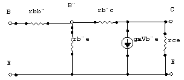
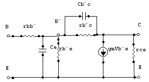
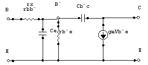

Respuesta en Alta Frecuencia
Superposición de polos. Concepto de polo dominante.
Hasta ahora hemos visto la respuesta de un amplificador en baja frecuencia y qué técnica usar para el caso especÃfico de acoplar varias etapas amplificadoras con BJT en emisor común a fin de hallar la $f_{L}$.
Cuando hemos indicado el modelo equivalente del transistor, siempre nos hemos remitido al modelo "H" para una configuración Emisor Común, de manera que obtenÃamos los siguientes elementos del cuadripolo:
(Para ver valores regulares de estos parámetros en un transistor comercial, hay que revisar la información en el manual que nos da el fabricante)
Modelo HÃbrido $\pi$ (Pi)
Existe otro modelo circuital, llamado Modelo HÃbrido $\pi$ (Pi) que también nos ayuda a analizar el comportamiento de un transistor.
En baja frecuencia el modelo hÃbrido $\pi$ del BJT es como sigue:

En alta frecuencia, se añaden a este modelo las capacitancias parásitas internas que aparecen en las uniones del transistor, quedando como sigue:

Para simplificar este modelo, asumimos algunas consideraciones, que siguen permitiendo que nuestro modelo sea válido:
- En la configuración de Emisor Común, la resistencia $r_{ce}$ queda en paralelo con la carga y, por lo general $R_{L} \ll r_{ce}$ por lo que podemos suprimir a $r_{ce}$.
- También podemos suprimir $r_{b'c}$ porque es mucho mayor que las demás resistencias del circuito.
Con las consideraciones previas, llegamos al siguiente circuito simplificado:

También se conoce a estos parámetros con los siguientes nombres y los siguientes valores comerciales tÃpicos:
A continuación tenemos las equivalencias entre los parámetros $\pi$ y los parámetros H de los modelos de transistor.
En clase se hablará del TEOREMA DE MILLER.
Ganancia de Corriente de Cortocircuito en Emisor Común
Ya conocemos varios elementos necesarios para entender un parámetro importante en el estudio de un amplificador a alta frecuencia. Dicho parámetro es $f_{T}$.
$f_{T}$ es la frecuencia a la cual la Ganancia de CORRIENTE en cortocircuito, en emisor común, se hace igual a la unidad.
Pero antes vamos a determinar esa ganancia de corriente $A_{i}$.
Como bien se ha dicho en la definición de $f_{T}$ consideraremos $R_{L} = 0$. Determinaremos la función de transferencia usando el modelo hÃbrido $\pi$.
La corriente que circula por la rama de la carga es $I_{c} = g_{m} V_{\pi} - I_{f}$ y podemos despejar el valor de $A_{i}$ (Ganancia de Corriente).


Sustituyendo el valor de $V_{\pi}$ en $A_{i}$ podemos obtener la ganancia de corriente en cortocircuito:

Sustituyendo el valor de $g_{m} r_{\pi} = h_{fe}$ y agrupando algunos términos como $\tau_{H} = r_{\pi} (C_{\pi} + C_{\mu})$ resulta la siguiente expresión:
$f_{\beta}$ es la frecuencia lÃmite del circuito a la cual la ganancia de corriente en baja frecuencia ($h_{fe}$) se ve disminuida en 3dB, es decir, $f_{\beta}$ nos determina el ancho de banda del circuito.
Recordando la definición de $f_{T}$ y usando las ecuaciones precedentes, junto con la consideración de que $f \gg f_{\beta}$, llegamos a la aproximación:

Sabiendo esto, también podemos llamar a $f_{T}$ el producto del ancho de banda por la ganancia de corriente en cortocircuito. De manera que si tenemos dos transistores con igual $f_{T}$, el que tenga menor $h_{fe}$ será el que tenga mayor ancho de banda.
Concepto del Polo Dominante
En clases anteriores vimos la expresión resultante de la Frecuencia Inferior de Corte para un circuito amplificador configurado en emisor común. Dicha expresión fue el resultado de aplicar el principio de Superposición en el modelo hÃbrido equivalente (H), de manera que obtuvimos tantas frecuencias de corte como condensadores independientes habÃa en el circuito. El concepto del Polo dominante, nos ayuda a reducir esta expresión y nos dice que:
A Baja Frecuencia ($f_{L}$)
Podemos decir que el polo dominante es el mayor polo de los encontrados, siempre y cuando éste diste del que le precede, al menos una década. Matemáticamente podemos expresarlo como:
Si $f_{L} \approx f_{L1}$ (donde $f_{L1}$ es el polo mayor (de mayor frecuencia) y $f_{L2}$ es el segundo mayor polo) entonces podemos decir que $f_{L} \approx f_{L1}$.
A Alta Frecuencia ($f_{H}$)
Podemos decir que el polo dominante es el menor polo de los encontrados, siempre y cuando éste diste del que le precede, al menos una década. Matemáticamente podemos expresarlo como:
Si $f_{H} \approx f_{H1}$ (donde $f_{H1}$ es el polo menor (de menor frecuencia) y $f_{H2}$ es el segundo menor polo) entonces podemos decir que $f_{H} \approx f_{H1}$.
A manera de información general es bueno conocer que cuando una frecuencia es el doble de otra podemos decir que tales frecuencias distan entre sà "una Octava".